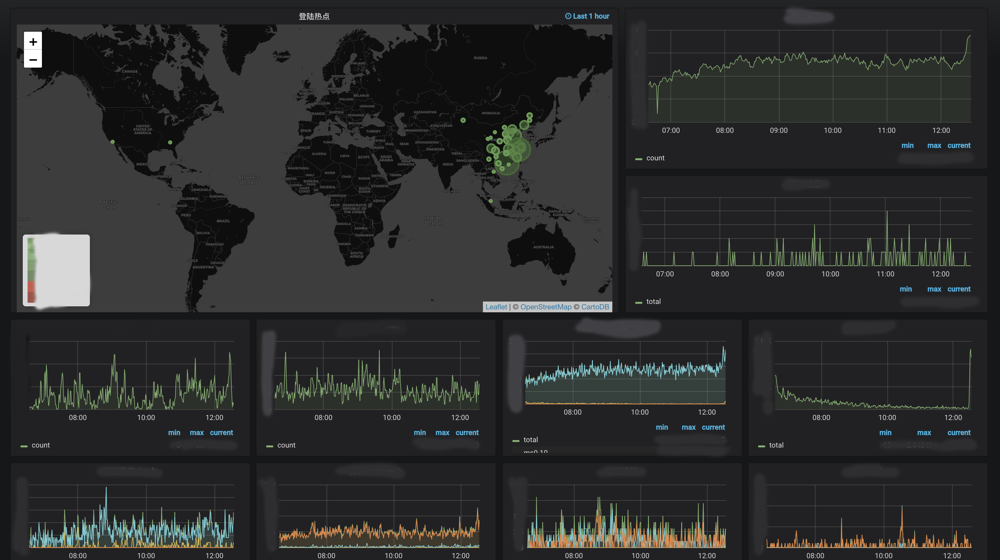

分析
在任何项目中，一个可以直观表示当前系统运行状态的数据大盘对开发和运维人员都是非常有价值的。通常互联网大厂内部都会有一些提供监控运维供的公共平台。比如网易内部有哨兵、NDP等。这些平台通常能完成各种监控数据采集和展示。但也正是因为作为公共服务平台，它们无法做到为每个业务产生定制化的数据展示服务，甚至是基于数据的自动运维能力。因此，当项目达到一定量级以后，构建项目自身的数据大盘和自动运维系统就非常必要了。
目前业界使用最广泛的开源监控数据展示框架应属Grafana，它提供种类丰富的仪表盘，可以满足绝大多数的数据展示需求。同时它支持各种常见的数据库作为数据源，并对HQL做了可视化配置，可以快速搭建数据大盘。在数据源方便，虽然现在Grafana已经支持了MySQL之类的传统数据库和ElasticSearch之类的搜索引擎。但通常如果是作为数据大盘使用，最适合的还是时序数据库。时序数据库的数据存储方式本身就是完美匹配了监控数据的展示方式。在时序数据库中，InfluxDB属于老牌了，应该也是业界使用最广泛的时序数据库，其它常见的有OpenTSDB、Druid、Beringei，以及近年兴起的提供整套监控能力的Prometheus。至于选型的过程及原因这里就不做说明了。
实践
InfluxDB搭建
InfluxDB单机搭建非常简单，首先在官方下载页面找到对应版本下载地址并下载到主机上。
|
|
解压后进入influxdb-1.6.4-1文件夹，会看到里面有三个子文件夹：etc、usr、var。其中etc/influxdb中有配置文件influxdb.conf，用于配置各种启动参数和数据库属性。usr/bin目录中是启动脚本，influx是启动客户端程序，默认连接当前主机的默认地址和端口，influxd用于启动数据库。运行./influxd help可以看各种命令参数。位置文件中的各项配置都有英文注释，根据需求配置后以后。运行./influxd &启动，默认端口是8086。
启动以后就可以通过./influx运行客户端连接到当前数据库，influxdb的命令与mysql很接近，稍微看一下就可以学会了。其中有几个主要的常用概念：
- Database，表示数据库，与mysql的database类似。
- Measurement，描述数据库存储结构，可以理解为mysql的table概念，只是不需要手动创建，可以再写入数据时自动创建。
- Tag，类似于mysql中的字段，但是他不能被修改，且默认是被索引的。因此写入数据时最好都带上tag。只能是String类型
- Field，类似于mysql中的字段，可以被修改。支持类型有floats，integers，strings，booleans。
- Timestamp，每条数据都会有一个时间戳，精确到纳秒。
- Series，measurement, tag set, retention policy 相同的数据集合算做一个series。理解这个概念至关重要，因为这些数据存储在内存中，如果series太多，会导致OOM。
- Retention Policy，保留策略，可以在创建数据库时配置也可以在写入数据时指定，默认是永久保存，副本为1.
- Continuous Query，CQ 是预先配置好的一些查询命令，定期自动执行这些命令并将查询结果写入指定的 measurement 中，这个功能主要用于数据聚合。具体可参考：官方文档。
- Shard，存储一定时间间隔的数据，每个目录对应一个shard，目录的名字就是shard id。每一个shard都有自己的cache、wal、tsm file 以及 compactor，目的就是通过时间来快速定位到要查询数据的相关资源，加速查询的过程，并且也让之后的批量删除数据的操作变得非常简单且高效。
目前官方说明，在1.7以后的版本中，将不再开源InfluxDB的集群模式。1.7及之前版本还可以通过官方的集群模式来部署高可用的InfluxDB集群。
Grafana搭建
完成数据库搭建以后，接下来就是前端展示框架Grafana的搭建。同样在官网上找到对应的下载地址并下载到主机。
|
|
解压后进入grafana-5.3.2文件夹，其中conf/default.ini用于各种参数配置，bin/grafana-server用于启动grafana服务。我们主要需要对defalut.ini中的参数进行修改。首先[path]目录下是关于数据库存储的一些配置，可以不修改。[server]目录下是关于服务的一些参数，如果是提供https访问，就需要把protocol改为https，并设置对应的cert_file和cert_key。http_port是提供服务的端口，domain是提供服务的域名。要注意，如果配置了domain但是又不是通过domain来访问Grafana的话会导致服务器不可用，并在页面会提示你。其中有一个root_url的配置需要注意，如果需要配置公司内的Opneid登陆，那么这个root_url会作为openbid认证的跳转链接。需要配置为在openid认证注册的跳转url。
接下来是Database目录，用于配置grafana自身的sqlite的配置。默认sqlite3文件在data/grafana.db，可以通过sqlite3客户端直接访问，其中存储了一些用户信息数据和监控表盘配置数据。
再往下有各种认证支持的配置，如Google OAuth,Github OAuth等等，如果要接入公司内的Openid认证，那就找到Generic OAuth目录，把enable改为true，并配置上oauth相关的参数。如果没问题的话，这时候刷新页面应该就可以通过openid登录了。如果为了数据安全，不想让全公司的人都可以看，那就把其中allow_sign_up一项改为false，这样的话，用户就需要通过邀请才能登录。
其它各种配置这里就不一一说明了，基本都有英文注释，很容易看懂。
启动Grafana以后，首先以admin的默认账号登录，系统会引导你修改账号密码，创建dashboard等操作。如果是只允许openid用户登录，建议把普通登录框隐藏掉。disable_login_form改为false。不过这里似乎有个小bug，当隐藏了登录框以后，邀请用户的按钮会消失，不过可以直接在url上输入/org/users/invite进入邀请页面。如果想要发送邀请邮件，需要在default.ini中配置stmp相关的参数。不配置的话，也可以直接在邀请页面把邀请链接复制给对方。
数据采集
数据采集工作，就根据业务的需求来定制了，可以从公共监控平台获取已经采集好的数据按时序导入到Influxdb，也可以通过kafka得到业务抄送出来的直接数据，自己做清洗分析以后导入influxdb。还可以从ElasticSearch中获取采集好的日志，分析以后导入。总之数据源可以来自各种途径。
表盘插件
Grafana支持插件模式，比如比较常用的Pie Chart和WorldMap，可以在官网上看到安装和实用方式。
扩展
在搭建好基础的监控系统以后，接下来就可以根据数据分析得到的结果来进行自动运维的工作，如自动拉起进程，自动调整路由权重等等，这快内容相对就更加复杂和个性化了，在以后的文章中再另做分析。
最终效果
